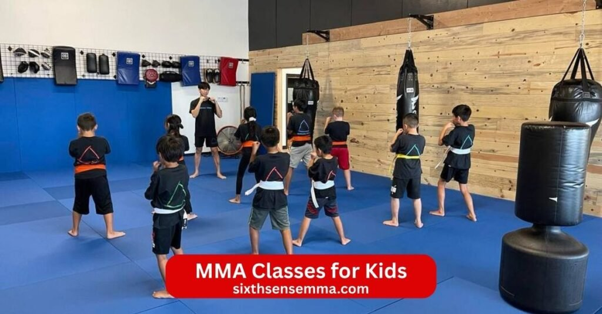
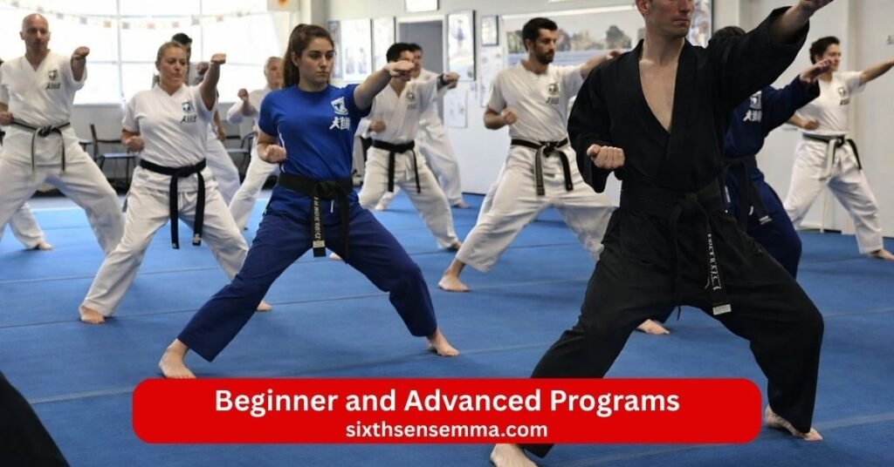

MMA Classes for Kids Safe Structured & Confidence Building Training

MMA Classes for Kids give children a fun active way to grow stronger build real skills and learn important life lessons right from the start. At Sixth Sense MMA in Coppell TX we run special kids mma classes kids mma program and kids mixed martial arts sessions that mix brazilian jiu jitsu bjj muay thai wrestling boxing kickboxing and other martial art styles into one exciting training. Kids ages 6 and up step onto our clean safe mat wear proper protective gear and glove and work with caring coach and instructor who make every class fun and exciting.
What Your Child Will Learn in Our MMA Classes for Kids
Our MMA Classes for Kids give children ages 6 and up a safe place to grow strong learn real skill and have fun every class. Kids train in a friendly academy with caring coach and instructor who show them how to combine different martial art styles. They work on the mat wear protective gear like glove and use gear made for safety. Children build fitness get better at movement and pick up habits that help them in school and life. The kids mma program mixes kids mma classes kids mixed martial arts and kids martial training so every session feels fun and exciting while teaching control respect and growth.
Basic Striking Techniques (Boxing & Kickboxing Fundamentals)
Kids start with simple striking moves from boxing and kickboxing. They learn how to throw clean punches use proper footwork and add kicks with good form. Coach break down each technique so children understand how to strike safely and with power. They practice on pads and bags to get the rhythm right. This part of mma training helps kids feel strong and quick while staying in control. They see how these basics connect to ufc bellator and pro fights but the focus stays on learning not fighting hard.
Grappling and Ground Control Basics
On the ground kids discover grappling and how to control position. Submission basics come in slowly with lots of practice so children know how to tap if needed and stay calm. Jiu jitsu and wrestling elements teach them to use body position and leverage instead of force. Every class includes time to roll safely with partners which builds trust and shows kids they can handle being on the bottom or top.
Self Defense Skills for Real Life Situations
Children pick up self defense tools they can use if they ever face a bully or tough spot. The kids mma training shows practical ways to defend stay safe and get away. They practice escapes blocks and simple counters that work in real world moments. Instructor teach kids to stay aware avoid trouble and use technique smartly. This part helps them feel ready without making them aggressive. Kids gain the mindset to handle pressure and protect themselves or friends.
Fitness Agility and Coordination Training
MMA Classes for Kids make bodies stronger and quicker through active drills. Children run jump move side to side and work on balance so they get more athletic. Agility games improve speed while coordination exercises help hands feet and eyes work together. They build endurance without even noticing because everything stays dynamic and game like. Regular training boosts overall fitness helps with school sports and gives kids energy that lasts all day.
Respect Teamwork and Leadership Skills
Beyond moves kids learn values that shape good character. They show respect to coach partners and themselves every time they step on the mat. Teamwork grows when children cheer each other on help during drills and train as a group. Discipline comes from listening following rules and pushing through hard parts. Many kids start to show leadership by encouraging others staying positive and setting examples. These lessons carry over to home school and friendships so children become better people not just better fighter or sport athletes.
Age Groups for Our MMA Classes for Kids
Our MMA Classes for Kids fit different ages so every child gets training that matches their size energy and stage of growth. We split kids into clear groups with coach and instructor who know exactly how to teach each level. Children wear proper gear and protective gear stay on safe mat and follow rules that keep everything fun controlled and positive. The kids mma program kids mma classes and kids mixed martial arts adjust moves drills and games to suit each age so kids progress naturally build skill and stay excited to come back.
Little Champions Program (Ages 4 6)
The Little Champions Program welcomes very young kids ages 4 to 6 who want to try martial art for the first time. Classes focus on play based learning with lots of games movement and simple technique. Children learn basic striking like safe punches and kicks grapple holds that feel like wrestling with friends and easy ways to move on the ground. Coach use colorful stories songs and rewards to instill discipline respect and listening skills. Kids improve coordination balance and listening while they build confidence and make friends. Everything stays gentle no hard contact just fun ways to explore mixed martial arts judo basics karate style moves and brazilian jiu jitsu ideas. Parents see big smiles and more active happy kids after just a few sessions.
Junior MMA Program (Ages 7 10)
Kids ages 7 to 10 join the Junior MMA Program where training gets a bit more structured but still full of energy and games. They work on clean boxing punches kickboxing kicks muay thai style knees and wrestling takedowns. On the ground they practice bjj brazilian jiu jitsu escapes submission defense and how to tap safely. Instructor teach self defense basics against bully situations with real focus on avoid first then escape. Children drill diverse techniques improve fitness agility and quick thinking through partner work and light spar with rules. They learn teamwork cheer each other and show leadership by helping classmates. This group helps kids build stronger bodies sharper minds and the mindset to stay calm under pressure while keeping classes fun and exciting.
Youth MMA Program (Ages 11 15)
The Youth MMA Program suits older kids ages 11 to 15 who want more challenge and deeper training. Classes combine full contact style drills with control so everyone stays safely protected by glove and gear. Teens master advanced striking grapple chains jiu jitsu sweeps submission setups and ways to defend in stand up or ground fights. They study ufc bellator pro fights moves as examples but always with safety first.
Benefits of Enrolling in MMA Classes for Kids
Enrolling your child in MMA Classes for Kids brings changes that help them grow stronger smarter and more sure of themselves. Kids train in a positive academy with good coach and instructor who guide them through mixed martial arts every session. They use the mat wear protective gear and glove stay safely and learn from kids mma kids mma classes and kids mma program. The kids mixed martial arts training mixes martial art styles so children pick up useful skill while having fun. Parents notice real differences at home school and with friends after kids start regular classes.
Improved Physical Fitness and Strength
Kids get much stronger and fitter from mma training. They run jump drill and move in dynamic ways that build muscle power and endurance. Striking practice with boxing kickboxing and muay thai kicks works arms legs and core. Grappling wrestling and brazilian jiu jitsu bjj moves strengthen the whole body especially grip back and legs. Children become more athletic improve coordination and stay active without feeling like hard exercise. Regular sessions boost overall fitness help with other sport and give kids energy that lasts through the day. Many parents say their child eats better sleeps well and handles daily play or school activities with more ease.
Better Focus and Academic Performance
Training sharpens a child’s mind in ways that show up at school. Kids learn to pay close attention during instruction follow steps exactly and stay present while they grapple or strike. The need to remember technique sequences and react quickly builds mental sharpness. Discipline from listening to coach and sticking to rules carries over to homework and classwork. Children often sit still longer concentrate better and finish tasks with more patience. Many kids who struggle with focus see improvement because mma gym sessions teach them how to control energy and thoughts. Parents report higher grades better listening and a stronger mindset for learning after consistent martial arts classes.
Increased Confidence and Self Esteem
Children feel much more sure of themselves after training in MMA Classes for Kids. They master new skill like escapes holds and submission defense which makes them proud of what they can do. Every time they tap learn a move or finish a drill they build confidence. Kids stand taller speak up more and try new things without fear. The supportive group helps them see their own progress and cheer others on too. This inner strength shows in school presentations friendships and facing small challenges. Build confidence happens naturally as kids realize they can handle tough spots and keep going. Parents love seeing their child walk in with a smile and carry that positive feeling everywhere.
Bully Prevention and Self Defense Awareness
One big reason families choose kids mma is the way it helps kids deal with bully and stay safe. Children learn self defense basics that teach them to defend stay calm and get away if needed. Instructor show real real world ways to block escape or use technique smartly without starting trouble. Kids understand self defense skills mean using power only when there is no other choice. Training foster awareness so children spot problems early avoid bad situations and stand up for themselves or friends.
Safety Measures in Our MMA Classes for Kids
Safety comes first in every MMA Classes for Kids session at our academy. We make sure children train safely enjoy the fun and exciting parts of mixed martial arts and never face unnecessary risk. Our coach instructor and staff follow clear rules to protect every kid on the mat. Kids use the right gear protective gear and glove for their age and size. The kids mma program kids mma classes and kids mixed martial arts include built in steps to prevent injuries keep the environment clean and create a secure space where parents feel good about dropping off their children.
Protective Gear and Controlled Sparring
We require full protective gear so kids stay safe during all activities. Children wear headgear mouthguards shin guards chest protectors and glove sized just for them. This equipment absorbs impact cushions hits and reduces any chance of bumps or bruises. Spar happens only in a very controlled way with strict rules no full power strikes light contact only and always with coach watching closely. Instructor stop drills right away if anything looks off. Kids learn to tap early to show when they need a break which teaches respect for limits.
Strict Supervision and Injury Prevention Guidelines
Every class has enough coach and instructor to watch every child closely no one gets left unsupervised even for a second. Martial arts instruction follows age appropriate guidelines that match the child’s size strength and experience. We teach proper warm ups cool downs stretching and safe ways to fall roll or escape so kids avoid twists strains or falls. Coach check form constantly correct mistakes before they cause problems and pair kids of similar size and skill for partner work. If a child feels tired sore or unsure we give rest modify moves or switch to lighter drills. These steps keep injuries very low and help kids master diverse techniques from boxing kickboxing muay thai wrestling bjj brazilian jiu jitsu judo and more without setbacks.
Clean Hygienic and Secure Training Facility
Our mma gym martial arts academy stays spotless and secure so children train in a healthy place. Mats get cleaned and disinfected multiple times each day equipment wiped down after use and the whole space aired out well. We limit class sizes keep groups small and make sure only registered kids and staff enter. Doors stay monitored parents can watch from a viewing area if they want and we follow check in rules for pick up. The facility has good lighting clear exits and emergency plans ready just in case. Kids focus on learning self defense discipline teamwork and fitness without worrying about dirt germs or strangers. Parents tell us this clean safe setup makes them comfortable leaving their child for martial arts classes.
Class Schedule and Membership Options for MMA Classes for Kids
Our MMA Classes for Kids fit busy family schedules so children can train regularly without stress. We offer clear options that make it easy for parents to choose the right path. Kids join kids mma classes kids mma program or kids mixed martial arts sessions in our mma gym and martial arts academy. Coach and instructor run every class with care so children build skill confidence and discipline step by step. We keep things simple affordable and welcoming for all ages.
Flexible Training Timings
We set class times that work around school homework and family routines. Morning weekend and evening slots let kids attend when it suits them best. Some days have back to back options so siblings of different ages can come together. Every class runs about 45 to 60 minutes to keep young energy high without wearing kids out. Parents drop off and pick up easily with our safe check in system. If a child misses a day we help them catch up in the next session. This flexibility means kids stay consistent train more often and see faster progress in technique fitness and self defense skills.

Beginner and Advanced Programs
We separate levels so every child gets training that matches their experience. Beginners start with basic striking grappling and fun drills that teach control and form. They learn boxing kickboxing muay thai basics wrestling takedowns and simple bjj brazilian jiu jitsu moves in a gentle way. Advanced kids move to tougher combinations submission chains light spar and strategy from ufc bellator and pro fights examples. Instructor watch closely adjust difficulty and make sure no one feels left behind or pushed too hard. Children progress at their own speed earn recognition for hard work and always stay safely on the mat with proper protective gear and glove.
Affordable Membership Plans
We keep costs reasonable so more families can join MMA Classes for Kids. Monthly plans include unlimited classes per week so kids attend as often as they want. Family discounts help when brothers sisters or cousins sign up together. No long contracts lock you in just month to month options that give freedom to pause if needed. We also offer packages for gear glove and protective gear at lower prices for members. The focus stays on value children get full martial arts instruction from experienced coach in a positive space without high fees getting in the way.
Free Trial Class Availability
Try before you commit with a free trial class that lets your child experience everything firsthand. Kids come in try an intro session get started right right away and see if they like the fun and exciting drills partner work and group energy. Parents watch from the viewing area talk to coach afterward and ask any questions. No pressure to sign up right then we just want families to feel sure it is the right fit. Many kids love their first class so much they ask to come back the next day. This no cost way helps you see how kids mma training foster teamwork respect and growth in your child.
Why Sixth Sense MMA Are the Best Choice for MMA Classes for Kids in Coppell TX
Families in Coppell choose Sixth Sense MMA because we deliver real results in a safe welcoming space right in the community. Our academy focuses on kids mma kids mma classes and kids mixed martial arts that help children grow strong build skill and develop good character. Kids train with experienced coach and instructor who know how to make mixed martial arts fun and exciting for young ages. We combine brazilian jiu jitsu bjj muay thai wrestling boxing kickboxing and more so every child masters diverse techniques while staying safely on the mat. Parents see their kids gain confidence discipline fitness and the mindset to handle challenges at home school or with friends. We stand out as the top spot for MMA Classes for Kids in Coppell TX because of our location attention to detail and real success stories.
Convenient Location
Our mma gym sits at 817 S MacArthur Blvd #100 Coppell TX 75019 making it easy for families to get here. Right off MacArthur Boulevard with plenty of parking close to neighborhoods schools and shopping areas means short drives no traffic headaches. Parents drop kids off before errands pick them up after practice or come straight from work without long commutes. Kids feel comfortable knowing the place is nearby and familiar. This easy access helps children attend regularly train more often and stick with the kids mma program long enough to see big changes in athletic ability coordination and self defense skills. Location matters when you want consistent training and we make it simple for Coppell families.
Small Class Sizes for Personal Attention
We keep groups small so every child gets noticed and guided properly. Coach and instructor watch form correct mistakes answer questions and adjust drills to fit each kid’s level. No one gets lost in a big crowd or waits around. Small sizes let us pair children safely by size skill and energy for partner work grappling striking or light spar. Kids feel supported ask for help when needed and progress faster because martial arts instruction stays personal. Parents tell us this attention makes their child more engaged excited to come back and willing to push harder. In our martial arts academy small classes mean better safety more fun and real growth for every young fighter or beginner.
Proven Track Record of Student Success
Kids who train here show clear improvements that last. Many started shy or unsure but now carry themselves with strong posture speak up in class and handle bully situations calmly. Parents share stories of better grades more focus at school higher confidence and the ability to defend themselves if ever needed. Children earn praise for discipline teamwork respect and leadership both on the mat and off. Our kids mma students often become role models for younger ones show good sportsmanship and carry the lessons into everyday life. We see kids build stronger bodies sharper minds and positive attitudes through consistent mma training. These real changes from our kids martial classes prove we deliver what families want safe effective training that shapes great kids.
Why Choose Sixth Sense MMA for Classes for Kids
Sixth Sense MMA stands out as the top choice for families in Coppell who want their children to train in MMA Classes for Kids. Our martial arts academy focuses on safe positive growth through mixed martial arts with kids mma kids mma classes and kids mma program designed just for young learners. Children work with skilled coach and instructor on clean mat using proper protective gear and glove to learn diverse techniques from brazilian jiu jitsu bjj muay thai wrestling boxing kickboxing and more. Kids build skill confidence discipline and fitness in a place that feels welcoming and fun. Parents pick us because we put child safety development and real progress first every single day.
Certified and Experienced Youth MMA Coaches
Our coach and instructor hold certifications in martial art styles including bjj muay thai and youth training methods. They have years of hands on experience teaching children from beginners to more advanced levels. These coach understand how kids think move and learn so they explain technique in simple clear ways. They know when to push gently encourage strongly or slow things down for safety. Every martial arts instruction session stays age appropriate with focus on proper form control and fun. Kids respect them because the coach lead by example show patience and celebrate small wins. Parents trust our team to guide their children toward becoming better fighter better students and better people through smart positive teaching.
Safe Supervised and Child Friendly Training Environment
Safety shapes everything we do at Sixth Sense MMA. We keep class sizes small so instructor watch every child closely during striking grappling submission practice or light spar. The mma gym stays clean hygienic and secure with regular deep cleaning good ventilation and monitored entry. Children feel happy and relaxed because the space welcomes them with bright open areas viewing spots for parents and a warm friendly vibe. We make sure every kid train safely enjoys the fun and exciting drills and leaves each class smiling. This child friendly setup helps kids focus on learning self defense skills teamwork and respect without worry.
Age Appropriate MMA Curriculum for Beginners and Advanced Kids
We tailor the kids mixed martial arts curriculum to match each child’s age and skill exactly. Little ones start with play games basic moves and lots of encouragement to build coordination and love for training. Older kids tackle more advanced technique combinations strategy and controlled partner work. Beginners learn fundamentals like safe strike simple grapple and escapes while advanced students explore ufc bellator inspired chains submission setups and full body movement. Every class progresses naturally so no one feels rushed or bored. Children master skills at their own pace earn praise for effort and see clear steps forward. This smart structure keeps training dynamic effective and right for ages 6 and up whether your child just wants to try martial arts classes or aims to grow into a strong well rounded young athlete.
Contact US
If you’re ready to get your child started with MMA Classes for Kids at Sixth Sense MMA or if you have any questions about our kids mma classes kids mma program schedules trial sessions or anything else feel free to reach out. We’re here to help families in Coppell and the surrounding areas find the perfect fit for their kids. Our coach and team love talking to parents and answering questions so you can feel confident about signing up.
- 817 S MacArthur Blvd #100 Coppell TX 75019 United States
- (469) 972 7800
- info@sixthsensemma.com
Conclusion
MMA Classes for Kids at Sixth Sense MMA offer much more than just fighting skills they help children grow into stronger happier and more confident young people. From the first intro session kids step into a safe welcoming mma gym where they train with expert coach and instructor who care about every child’s progress. They learn diverse techniques from brazilian jiu jitsu bjj muay thai wrestling boxing kickboxing and other martial art styles while wearing proper protective gear and glove on clean mat.
Follow Us on Social Media
Stay connected with Sixth Sense MMA through our social media channels. Follow us for class updates, training tips, and a closer look at our self defense community.
FAQ’s
Kids can start MMA training as young as 4 or 5 years old in many programs but it depends on the gym and focus. At ages 4 to 6 classes usually stay play based with basics like balance listening, footwork and simple movements. No hard contact happens. Experts say formal full MMA with grappling and striking often starts around 8 to 13 depending on the child’s maturity, body development and interest. Some places wait until 13-16 for more intense practice to let bodies grow safely. Always check with a good academy that uses age appropriate rules, protective gear and supervision to keep things safe and fun.
MMA for kids often goes by names like Youth MMA Junior MMA Kids MMA or Mini MMA. It sometimes gets called Youth Mixed Martial Arts or Children’s Mixed Martial Arts. These programs blend styles like brazilian jiu jitsu wrestling boxing and muay thai but stay scaled down safe and focused on fun skill building discipline and confidence instead of full adult style fights.
MMA can be good for kids when taught right in a safe structured program with an experienced coach. Benefits include better fitness, strength agility coordination, focus discipline, respect teamwork and confidence. It helps with self defense awareness, bully prevention and even school performance through mental sharpness and energy management. Many kids gain a positive mindset and character. Risks exist like minor injuries if contact gets too hard or supervision lacks but good youth programs limit head strikes, use protective gear, control sparring and prioritize technique over power. Compared to some youth sports MMA often shows lower serious injury rates when done properly. It helps most when the goal stays personal growth, not early hard competition.
Kids jiu jitsu classes usually cost between $100 and $220 per month on average depending on location, gym reputation and plan. In many US areas it falls around $150 to $200 for unlimited or multiple classes per week. Lower end might hit $120 in smaller towns while bigger cities or top schools go $180 to $250. Some places offer family discounts, trial periods or shorter commitments. Add one time fees for gear like gi uniform or enrollment around $50 to $200. Prices vary so check local gyms for exact rates.
Yes a 10 year old can do MMA in most youth programs. At this age kids often join junior or youth groups with age appropriate training that includes basic striking grappling escapes and self defense without full hard contact. Good classes use protective gear, small groups close supervision and focus on fun skill and control. Many 10 year olds thrive building fitness coordination, confidence and discipline. Just pick a reputable academy that matches maturity level and keeps safety first.
Conor McGregor started boxing at age 12 when he joined a local club in Dublin. He later added kickboxing and MMA training around his mid teens and made his amateur MMA debut at 18 in 2007. His pro career kicked off in 2008.
A 4 year old can start in beginner kids martial arts or early MMA style programs but it stays very basic and play focused. Classes at this age emphasize listening body awareness, balance simple footwork games and fun movements with no real contact or fighting. Many gyms accept kids from 4 to 6 for intro programs that build motor skills coordination and respect. Full MMA elements come much later. Look for places with child friendly safe setups and experienced youth coaches to make sure it fits the development stage.
Jon Jones started wrestling in high school and became a standout there winning state titles. He began his pro MMA career at age 20 in 2008 after college wrestling success. He had no early formal striking background mentioned but jumped into MMA young thanks to his wrestling base.
No 25 is not too late to start training for a possible UFC career. Plenty of fighters begin seriously in their mid 20s and reach high levels with talent, hard work and smart progression. Many pros debut or peak later. It takes dedication, years of amateur fights, skill building and luck but 25 leaves time to develop if you train consistently. At 30 chances drop more due to body wear and competition depth but even then some succeed. Focus on good coaching, consistent practice and realistic steps from local fights up.
At UFC 300 bonuses rose to $300 000 each. Max Holloway won two for his knockout of Justin Gaethje earning $600 000 total from Performance of the Night and Fight of the Night. Other fighters also got $300 000 bonuses but Holloway took the biggest share.
Train with us in Coppell
The first class is free. Shorts, a t-shirt and a water bottle. We lend the rest.
Book a free class